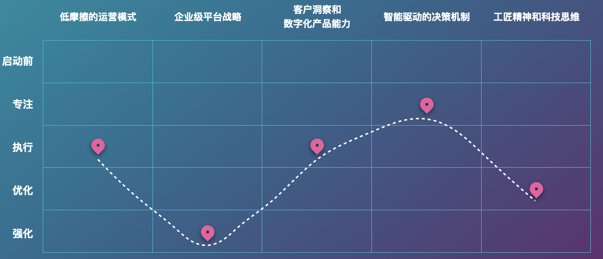

2020年突如其来的新冠疫情加速了全球的数字化时代步伐。我们看到各行各业，包括政府部门都在加速数字化转型。保险行业面临数字化转型的新机遇，如何打造数字化业务，已经是一个不容回避的课题。
本文首先探讨数字化时代保险行业的变革，分析传统保险公司面临的挑战，并提出打造数字化业务的方法，最后以一家虚拟的X保险公司作为示例，展示如何帮助它打造自己的数字化业务，从而实现其战略目标。
1. 数字化转型驱动保险行业变革
最近10年，IT技术的快速发展，特别是互联网、大数据、云计算、物联网、可穿戴设备、人工智能和区块链等技术的进步和综合应用，已经给我们的生活带来了翻天覆地的变化。在保险行业，数字化已经或将在各个方面产生巨大变革，我们认为其中有三个方向值得关注。
1.1 数字化将重塑保险价值链
保险核心价值链可以分为保险产品设计、营销与分销、核保与承保、理赔与服务、资产管理等五个环节。我们看到每一个环节都正在发生数字化变革，这些变革帮助保险公司提升经营效率，为消费者提供更优质的产品和服务。
最明显的变化来自销售端，渠道的变化最快。传统的渠道严重依赖于代理人和中介。据公开资料显示，13个月的代理人留存率逐年下降，甚至不足30%。部分险种65%以上的保费作为手续费被中介机构拿走。过去几年，互联网保险已经不是新鲜事物。未来的销售渠道将向保险公司自己的数字化销售体系和具备客户触达能力的平台型公司集中。
在产品设计方面，目前主流的保险产品都以损失后赔偿，对冲风险为主。随着人工智能与传感器的应用，未来将有更多的产品将转向阻止损害发生。这是对保险产品的颠覆式变化。例如美国恒康 人寿保险公司宣布已经停止承保传统寿险，转而销售基于可穿戴设备跟踪健身和健康数据的交互式新型保险。通过运动健康数据方面来吸引客户，根据获得的数据来调整投保人保费或给予折扣。
在理赔端，运用机器学习、医疗知识图谱等技术，自动理赔、快赔、闪赔开始出现并将快速普及。前几年我们看到11.11的时候，各大电商比拼谁的物流快。0点下单，凌晨就送货了。同样的场景也出现在保险行业，在重大事故发生时，保险公司也在比拼理赔的速度。
1.2 场景和数据加速保险产品创新
保险产品的设计将越来越依赖基于数据定义的场景和客户需求，并通过特定渠道精准触达，然后通过运营反馈快速进行产品迭代。
保险产品与普通商品相比，有一些特殊性：
- 保险产品可以被快速复制，不存在知识产权壁垒问题。一个新产品研发出来，别的保险公司可以快速复制条款或稍作改动就推出相同的产品。以百万医疗险为例，2016年8月众安在线推出第一款“百万医疗险”尊享e生，第二年“百万医疗险”就如雨后春笋般面市。
- 随着大众对保险认知走向成熟和理性，品牌不再是主要考虑因素。因为即使保险公司破产也不会对投保人产生影响，银保监会将接管兜底，购买的保险并不会因此失效。
保险产品的这些特点，意味着保险公司需要持续产品创新，并且努力在价格、运营、渠道等方面保持竞争力。
我们看到面向特定场景，基于大数据分析的创新型产品正在持续推出。例如大家已经熟知的退货运费险、手机碎屏险等。还有爱选科技通过整合80家保险公司的3000多种保险产品，以C端客户需求设计产品，多样化解决方案，实现标准化、精细化和专业化的管理。
产品的定价模式也在发生变化。目前的产品定价以保险大数法则为原则，当样本足够大时，保险公司就可以比较精确的预测风险，合理的厘定保险费率。而基于大数据分析的个性化定价模式也正在悄然兴起。例如英国大数据公司Cytora正在帮助保险公司精细化保险定价，未来可能出现千人千险的局面。
1.3 数字生态创造保险科技的未来
除了前面介绍的保险产品特殊性外，保险产品购买的频次也非常低，无法建立客户黏性。寿险产品每年续保一次，甚至多年才需要补充购买，而公众对家庭财产保险的保险意识还非常弱。
未来的出路在于构建数字生态。以保险为工具，连接各类优质服务提供商，增加客户触点、提升客户黏性，打造保险+服务的新商业模式。例如部分保险公司推出的药品直送、在线健康问诊、就医绿色通道等等。
数字生态的建设主要包括：
- 构建数字化渠道：实现保险公司全渠道、全业务、全场景的服务体验。
- 打造生态圈提升获客能力：发挥保险公司自身优势，与相关产业和服务提供商互动合作，实现共赢。例如平安集团打造的出行、医疗健康、房产等主要生态场景，以及平安健康保险引入Discovery Vitality 的 “健行天下”。
- 开放保险能力：开放银行概念的兴起对保险行业具有很好的示范作用，保险能力开放将大幅提升保险公司的市场竞争力。例如德国的安联集团对内部开放其保险核心系统，使合作商可以在资源共享的平台上共同开发系统；对外部接入其他平台和应用，投保人可以从第三方平台购买其产品。
2. 传统保险公司在数字化时代面临的挑战
面对数字化时代保险行业的变革，传统保险公司用有丰富的产品资源和庞大的线下渠道优势，但面临的挑战也非常明显。
2.1 数字寡头入侵
据中金公司的研究报告，未来10年，互联网保险市场规模将达到2.5万亿，是2019年全年保险市场的58%，相当于再造了半个保险市场。而保险潜在客户群体的年轻化、高教育程度和在线消费习惯，都会造成互联网保险对传统保险模式的替代是不可阻挡的。
传统保险公司正在面临数字寡头等新参与者的竞争。例如蚂蚁金服旗下的“相互宝”产品，上线第一周会员就突破1000万，截止2020年，会员已经达到1亿，而平安最新年报显示其到2020年12月末，个人客户数2.18亿。尽管相互宝是一款争议很大的产品，但从中可以看到数字寡头们的客户触达的精准性、更高效的运营能力和强大的基础设施，而这些都是传统保险公司所欠缺的能力。
2.2 历史包袱沉重
公众印象中可能觉得传统保险公司都有一流的人才和现代化的信息系统。然而事实是除了头部的保险公司很早就开始数字化转型外，大部分传统保险公司都面临巨大的数字化转型压力。
如果从上世纪末算起，经过20多年的信息化建设，保险公司的各项运营和管理都已经实现了信息化。然而烟囱林立、数据孤岛问题较为突出，难以形成客户洞见，突出规模和协同效应。
另外，传统保险公司难以跟上IT技术飞速发展的步伐。以保险核心系统为例，这几乎是所有保险公司的痛。一方面它确实长期以来支撑了公司的保险业务，立下汗马功劳。另一方面，这些系统大都始建于上世纪末或本世纪初，技术相当落后。例如有的采用存储过程实现业务逻辑，有的使用COBOL语言开发。落后的技术和长期技术债务的积累，都导致核心系统难以支撑业务的快速变化。
2.3 市场化机制不足
传统大型保险公司在产品的市场化创新、跨部门间协作和人员激励等方面存在不足，难以形成以客户为中心、以市场为导向，快速响应、高效运营的机制。
不论是保险价值链的重塑，还是产品创新和生态打造，通常都会跨业务条线、跨业务部门 ，这就需要市场、IT、运营、合作伙伴等相关各方有机协同与合作。为了应对这种挑战，我们看到当前大型保险公司都在设立数字化创新组织，建立创新流程和机制。但需要提醒的是，单独设立创新组织并不意味着原有的组织结构和协作方式就不需要调整。因为即使小到一个产品的交付也需要跨团队的协作，DevOps的兴起已经很好地说明了这一点。
数字化时代所有行业都面临人才匮乏的问题。 大多数保险公司不得不长期依赖IT外包，存在外包比重过大、自有IT骨干人员少，没有建立起人才梯队的问题。借用DDD的领域划分，就是没有在核心域上建立起自己的竞争力。而数字化是一场变革，产业创新的压力穿过前端，直达中台、后台，人才选用、培养、激励机制的配套已经刻不容缓。
3. 如何打造现代数字化业务
纵观数字化时代保险行业的变革和挑战，我们发现这并不是保险行业所特有的情况，而是时代发展带来的必然结果。我们已经看到数字化时代的先驱者们（Google、Amazon、Netflix、阿里和腾讯等等）如何树立标杆，成为其他企业追逐的对象。诚然，并不是每一家企业都要成为先驱者、颠覆者，但每一家企业都要在数字化时代找到自己的定位、制定有针对性的战略，并实现自己的战略目标。
ThoughtWorks公司是一家IT领域的专业服务公司。通过对数字化时代先驱者们的深入研究，并总结自身超过25年与不同组织合作、帮助他们发展数字能力的经验，ThoughtWorks提出了打造现代数字化业务(Mordern Digital Business, MDB)的方法。
限于篇幅的原因，本文简要介绍其方法，详细内容请阅读文后的参考书籍和ThoughtWorks官方网站。
ThoughtWorks认为现代数字化业务的关键能力是深入客户的洞察、缩短上市时间和创新数字化收益。ThoughtWorks创新总监肖然在 数字化时代的科技双模，双模IT成为过去式 - ThoughtWorks洞见 文章最后对这三个关键能力进行了详细解读。
要具备这样的关键能力，企业首先需要改变思维方式，建立数字化思维，它具有7个关键特征：
- 客户共情：站在客户的立场，去解决客户的问题，而不是卖给客户什么产品。
- 成效导向：资源的投入应该考虑衡量价值，对齐真正的成效，而不是工作量。参考关注成效而非产出 - ThoughtWorks洞见
- 快速响应：按照精益原则，建立更小的工作批次反馈闭环，而不是憋大招。参考提升业务响应力：践与行 - ThoughtWorks洞见
- 创新型文化：在组织中建立实验型思维，鼓励试错，而不是惩罚错误。参考是什么在扼杀你的创新文化？ - ThoughtWorks洞见
- 数据驱动战略：以数据洞察驱动决策，而不是领导拍脑袋。参考量化IT投资成效，以数据驱动决策 - ThoughtWorks洞见
- 低摩擦组织治理：打破部门墙，提升组织响应速度。参考从敏捷转型到精益企业 - ThoughtWorks洞见
- 科技重构业务：技术不仅仅强化业务，更不是成本中心，而应该是业务战略的核心，持续重构业务。
思维的改变并不容易，企业需要通过改变行为，并投资于现代数字化业务的5个核心支柱来实现：
- 低摩擦的运营模式：提高企业应对变革的能力
- 企业级平台战略：创建与业务战略相适应的技术平台
- 客户洞察和数字化产品能力：快速设计和交付卓越的产品和用户体验且不断进行演进
- 智能驱动的决策机制：利用数据资产开启新的价值来源
- 工匠精神和科技思维：在软件开发中利用模式与最佳实践，追求卓越
当企业决定投资于这5个核心支柱时，需要回答一个问题，每个支柱的能力应该投资多少，目标是什么？业界常常通过成熟度模型来评估，例如DevOps成熟度模型。成熟度越高，证明能力越强。然而每个企业的上下文不一样，战略目标不一样。一个卖衣服的电商并不需要淘宝那样的企业级平台战略，所以成熟度并不能解决这个问题。
ThoughtWorks开创性地引入了数字化流畅度来平衡投资、降低风险。以买衣服的电商来说，在企业级平台战略方面，其流畅度可能只需要达到”执行“就可以了，不需要做过多的投资。而淘宝在这个支柱则需要大量投资，使其达到“强化“级别的流畅度。关于流畅度与成熟度的区别可以参考成熟度模型罪与罚 - ThoughtWorks洞见
改编自AgileFluency®Project agilefluency.org
应用数字化流畅度去定义每一个支柱的目标流畅度，就可以找到每一个支柱的目标是什么，需要的举措有哪些。然后制定计划执行这些举措，实现数字化业务的打造，从而实现企业战略目标。
4. 打造X保险公司的数字化业务
下面我们以X保险公司为例，简要介绍如何为其打造数字化业务。请注意，因为每个企业上下文不同，所以其流程度的要求和对应要投资的内容是不同的。
X保险公司是一家传统的大型保险公司，面对数字化时代的挑战，迫切需要打造具有竞争力的数字化业务。该公司希望：
- 全面优化运营体系，提升端到端的运营效率、降低运营成本
- 建立个人保险产品创新机制
- 建立数字化生态、开放保险能力，链接生活、健康、出行、养老等服务提供商，提供无缝的客户体验
通过战略目标拆解、访谈和工作坊，我们为其设计了流畅度要求。如下图：

4.1 低摩擦的运营模式
在“低摩擦的运营模式”支柱，X保险公司需要达到“执行”级别的流畅度。意味着组织建立了跨部门的协作机制，打通端到端的运营价值流，并持续优化。组建跨职能的全功能团队。业务和技术共同创建计划，具有一致且明确的优先级。技术战略用来支持业务战略，项目和计划采用增量的方式运作。
为了达到“执行”的流畅度要求，X保险公司应该投资于：
- 敏捷与精益原则
- IT，运营和业务协作
- 业务和IT共享待办事项
- 共享成效度量
- 持久的跨功能团队
- 在制品限制
4.2 企业级平台战略
在“企业级平台战略”支柱，X保险公司需要达到“强化”级别的流畅度。意味着要在整个组织的IT架构能够满足当今需求，并且能够适应未来的变化。例如快速建立与第三方服务的集成并提升整体价值。组织也了解康威定律，能够积极地重组团队以创建流畅的现代体系结构。API生态系统得到了广泛应用，可以为客户创造新价值。该组织可以很好地创建平台业务，业务本身就是平台。
为了达到“强化”的流畅度要求，X保险公司应该投资于：
- 改造遗留资产
- DevOps文化
- 自助化基础设施平台
- 业务API生态系统
- 云原生的架构
- 演进的架构
- 平台SLA
4.3 客户洞察和数字化产品能力
在“客户洞察和数字化产品能力”支柱，X保险公司需要达到“执行”流畅度。意味着业务成效是明确定义的，能够反映客户价值，并且在整个组织得到广泛理解。客户体验是首要关心的，设计思维、从实验中学习等技术被用于解决问题。产品决策由业务视角驱动。
为了达到“执行”的流畅度要求，X保险公司应该投资于：
- 设计思维
- 稳定的跨功能团队
- 用户研究
- 精益切片执行
- 建立设计系统
- 测试、学习的技术
- 用户体验愿景和战略
4.4 智能驱动的决策机制
在“智能驱动的决策机制”支柱，X保险公司需要达到“专注”流畅度。意味着数据在很大程度上被视为信息，组织从原始数据中寻求知识和机会。数据仍然相对孤立。洞察力主要通过基本的报告技术收集。
为了达到“专注”的流畅度要求，X保险公司应该投资于：
- 数据工程
- 数据安全与隐私
- 描述性数据分析
- 报告及驾驶舱
4.5 工匠精神和科技思维
在“工匠精神和科技思维”支柱，X保险公司需要达到“优化”流畅度。意味着技术团队与业务能够紧密合作，实现了快速创新和业务敏捷性。他们可以在整个组织中清晰地了解技术选择，从而做出积极的技术选择。团队对他们的自动化测试套件充满信心，从一开始就保证质量。开发人员的经验是宝贵资产，技术骨干占有合适的比例。“技术专家”是受人尊敬的职业道路。
为了达到“优化”的流畅度要求，X保险公司应该投资于：
- 完全自动化的基础设施
- Observability as code
- 软件可靠性工程（SRE）
- 全自动化测试
- 开发团队自服务
- 开发者体验
- 基于风险的工程方法
总结
数字化时代保险行业的变革已经来临，保险公司需要明确战略目标，找到数字化时代自己的定位。借助ThoughtWorks的数字化流畅度模型，根据自己的上下文，找到5个核心支柱的目标流畅度，并制定相应的举措和投资计划，最终打造出具有竞争力的数字化业务。
更多信息请参考：